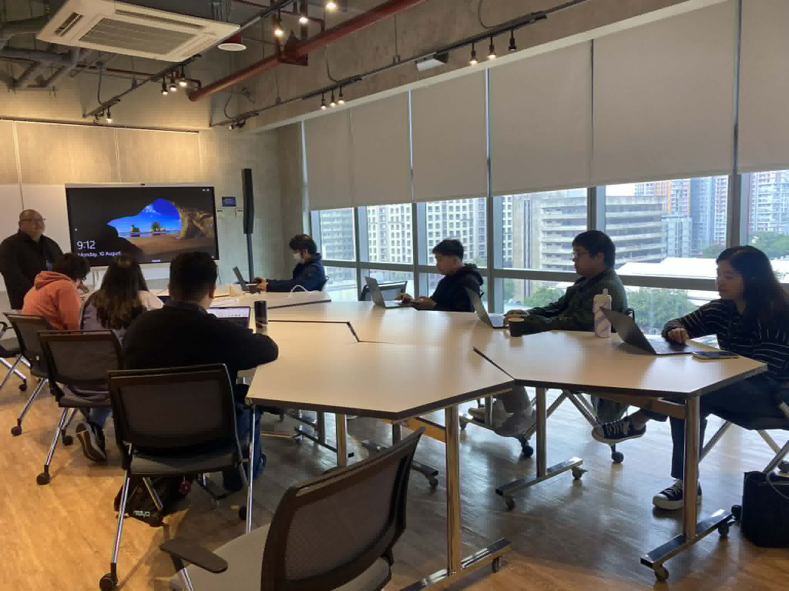
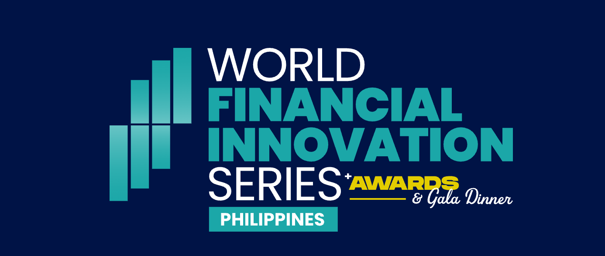
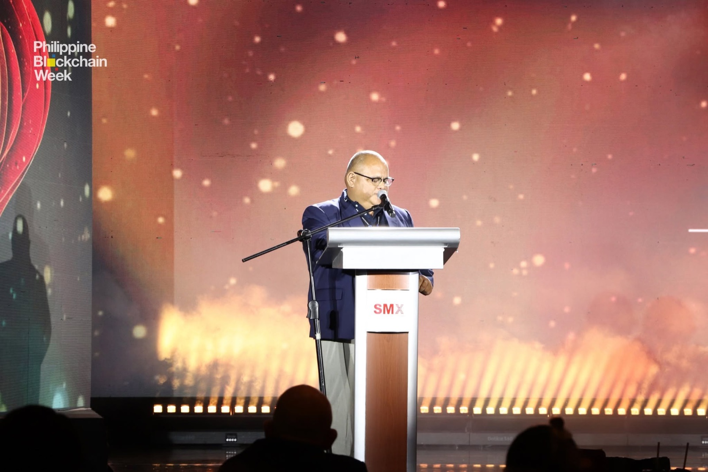
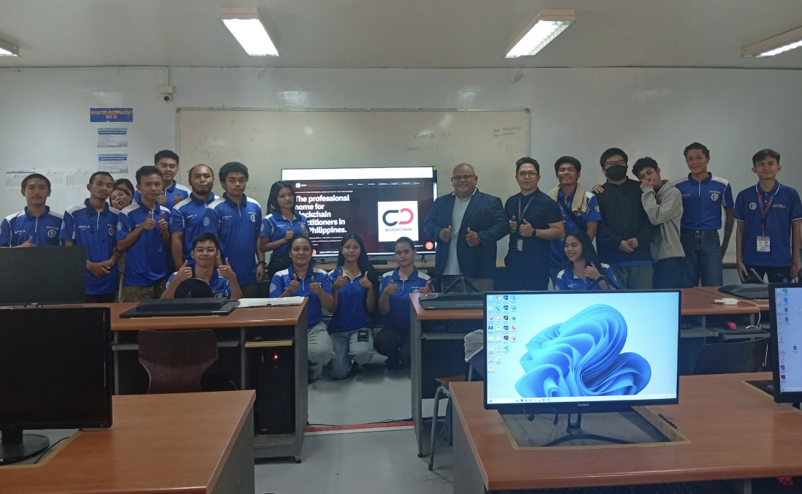

BPAP delivered a 3-day technical cybersecurity training for the IT and CERT teams of the Provincial Government of Davao del Norte, covering incident response, VAPT, and the Cybersecurity Maturity Framework.
Blockchain Practitioners Association of the Philippines
BPAP brings together builders, educators, researchers, compliance leaders, founders, and ecosystem contributors working toward a more trusted and capable blockchain sector.
Built for
Featured Announcement
BPAP delivered a 3-day technical cybersecurity training for the IT and CERT teams of the Provincial Government of Davao del Norte, covering incident response, VAPT, and the Cybersecurity Maturity Framework.

BPAP delivered a full-day Blockchain Forensics and AML Investigations training for Maya Philippines' Fraud, AML Intelligence, Legal Evidence Management, and Quality Assurance teams.

BPAP has joined World Financial Innovation Series (WFIS) Philippines 2026 as an Association Partner, bringing its advocacy for sound blockchain policy and practice into the country's mainstream financial services dialogue.

The Blockchain Practitioners Association of the Philippines (BPAP) was recognized during the Philippine Block Awards at Philippine Blockchain Week 2026, where Interim President Ferdie James Nervida received the Outstanding Community Contribution Award in recognition of sustained contributions to blockchain education, policy, and ecosystem development.
BPAP, Maxmedia, and TESDA RTC-KorPhil Davao are advancing a free Blockchain Fundamentals micro-credential course, extending BPAP’s education work into a structured credential pathway.
Latest From BPAP Insights
BPAP Insights publishes analysis, commentary, and member perspectives on blockchain practice, digital asset risk, privacy, cybersecurity, and emerging technology in the Philippine context.
Essay
A member perspective on inflation, currency weakness, regulatory friction, and why some Filipinos see self-custodied Bitcoin as a long-term personal hedge.
Read ArticlePolicy Analysis
A practical agenda for Philippine digital asset classification, stablecoin standards, crypto taxation, and GameFi safeguards.
Read ArticleFinancial Infrastructure
A case for supervised stablecoin corridors as practical financial infrastructure for Filipino remittances.
Read ArticlePolicy Analysis
A case study on Axie Infinity, P2E consumer harm, and the GameFi gap in Philippine crypto regulation.
Read ArticleRecent News
Follow BPAP News for organizational announcements, course development updates, event milestones, and partnership activity across the association's work.
News
BPAP has joined WFIS Philippines 2026 as an Association Partner, extending its advocacy for blockchain policy and practice into the country's mainstream financial services landscape.
Read UpdateNews
Recognition at the Philippine Block Awards highlights BPAP's continued work in blockchain education, public policy, and ecosystem development.
Read UpdateCommunity Approach
We are moving away from open public invitations to join. BPAP is being shaped through referrals, introductions, and working relationships with practitioners who are already contributing meaningfully to blockchain, cybersecurity, education, research, policy, and ecosystem development.
Membership is being approached through professional introduction and trusted network relationships rather than open promotion.
We want BPAP to be defined by participation, substance, and professional credibility before scale.
The aim is to build a community of practitioners whose work, conduct, and direction fit the standards BPAP is trying to uphold.
If you have been referred by a member, partner, or collaborator, BPAP can still be reached quietly through direct contact.
BPAP In Action
BPAP participated in Philippine Blockchain Week 2026, where Interim President Ferdie James Nervida received the Outstanding Community Contribution Award recognizing years of work advancing blockchain education and community development.
Read the full updateBPAP, Maxmedia, and TESDA RTC-KorPhil Davao are advancing a free Blockchain Fundamentals micro-credential course, with UTPRAS registration targeted by the end of July.
Read the full update
BPAP recently joined TESDA KorPhil for a seminar designed to help students engage blockchain and cryptocurrency technology critically, practically, and beyond speculation.
The session covered Bitcoin, Ethereum, smart contracts, and real-world blockchain applications, culminating in a capstone workshop where student teams defended their own blockchain innovation ideas.

BPAP delivered a session on cryptocurrency investigation for law enforcement with DICT Region XI under Regional Director Evamay Dela Rosa, in partnership with AnChain.AI, covering real-world crypto crime typologies, tracing techniques, and how investigators follow illicit funds across chains.
Participants included the NBI, PNP Anti-Cybercrime Group, RACU, NICA, CIDG, CICC, National Police College, PNP Regional Office, and the Armed Forces of the Philippines 1001st Brigade, reflecting stronger blockchain forensics capability-building efforts in the Philippines.

BPAP attended the DICT blockchain consultation as part of the wider industry dialogue on how blockchain can be advanced with stronger clarity, coordination, and long-term relevance in the Philippines.
Read the BitPinas feature
BPAP helped facilitate the Blockchain and Cryptocurrency Specialist Certification for the DICT Region 11 government workforce, supporting a stronger foundation for digital and blockchain capability in the public sector through practical training and active engagement.

BPAP attended “Igniting Discussion: Crypto at the Crossroads,” a forum organized by UP SPARK and joined by students and professionals exploring the opportunities, risks, and financial relevance of cryptocurrency in the Philippine context.
About Us
We provide a professional platform for collaboration, knowledge exchange, and ecosystem development among practitioners helping shape blockchain in the Philippines.
Our Mission
BPAP supports the growth of blockchain in the Philippines through professional standards, meaningful collaboration, and practical initiatives that contribute to long-term public trust.
Why BPAP
Help present blockchain as a disciplined and constructive field, not just a trend cycle.
Create stronger links between practitioners, institutions, and stakeholders across sectors.
Support practical use cases and informed engagement that can move the industry forward responsibly.
Initiatives
Convenings for practitioners, industry leaders, and relevant stakeholders.
Sessions, resources, and collaborative knowledge-building for the local ecosystem.
Focused collaboration around standards, policy, adoption, and cross-sector issues.
A more coherent public-facing voice for blockchain practitioners in the Philippines.
Contact
BPAP is being shaped as a professional and credible home for blockchain practitioners in the Philippines.
BPAP Insights
Contribution Received
We have received your submission and will review it for BPAP Insights. We will contact you through the email address you provided for the next steps.